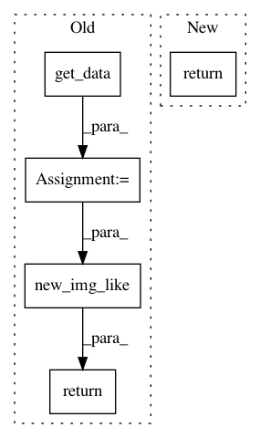

64faf99202c30fedc666f9846f8af017cecf8efd,nilearn/masking.py,,compute_gray_matter_mask,#,522
Before Change
from .datasets import load_mni152_brain_mask
template = load_mni152_brain_mask()
dtype = img_data_dtype(target_img)
template = new_img_like(template,
get_data(template).astype(dtype))
from .image.resampling import resample_to_img
resampled_template = cache(resample_to_img, memory)(template, target_img)
mask = get_data(resampled_template) >= threshold
mask, affine = _post_process_mask(mask, target_img.affine, opening=opening,
connected=connected,
warning_msg="Gray matter mask is empty, "
"lower the threshold or "
"check your input FOV")
return new_img_like(target_img, mask, affine)
def compute_multi_gray_matter_mask(target_imgs, threshold=.5,
connected=True, opening=2,
After Change
mask : nibabel.Nifti1Image
The brain mask (3D image)
return compute_brain_mask(target_img=target_img, threshold=threshold,
connected=connected, opening=opening,
memory=memory, verbose=verbose)
def compute_brain_mask(target_img, threshold=.5, connected=True,
opening=2, memory=None, verbose=0):
In pattern: SUPERPATTERN
Frequency: 3
Non-data size: 5
Instances
Project Name: nilearn/nilearn
Commit Name: 64faf99202c30fedc666f9846f8af017cecf8efd
Time: 2020-05-21
Author: ana.pinho@inria.fr
File Name: nilearn/masking.py
Class Name:
Method Name: compute_gray_matter_mask
Project Name: ellisdg/3DUnetCNN
Commit Name: a48b055a628bfa648a0b5a371838848e997440e2
Time: 2017-05-17
Author: david.ellis@unmc.edu
File Name: unet3d/normalize.py
Class Name:
Method Name: get_complete_foreground
Project Name: nilearn/nilearn
Commit Name: fa46d145b5db93e7a922135ffda087abab2760de
Time: 2018-10-26
Author: michaelnotter@hotmail.com
File Name: nilearn/image/image.py
Class Name:
Method Name: clean_img